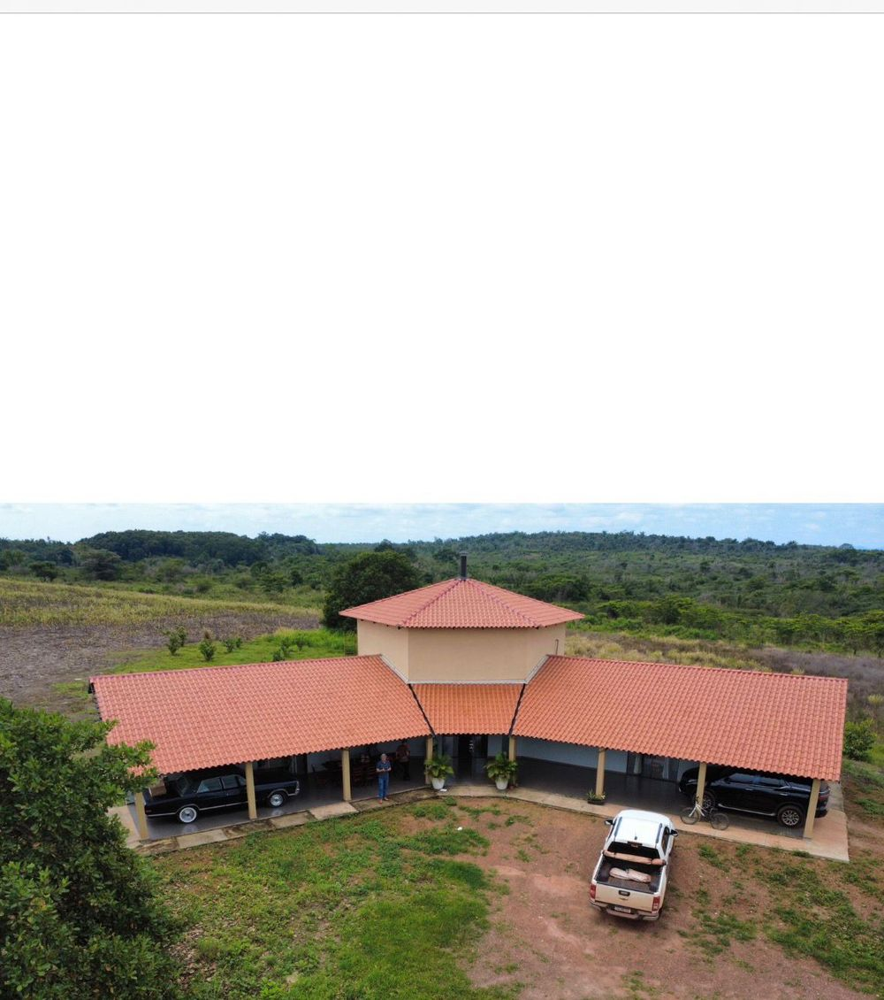
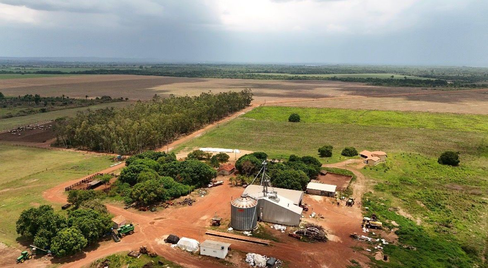
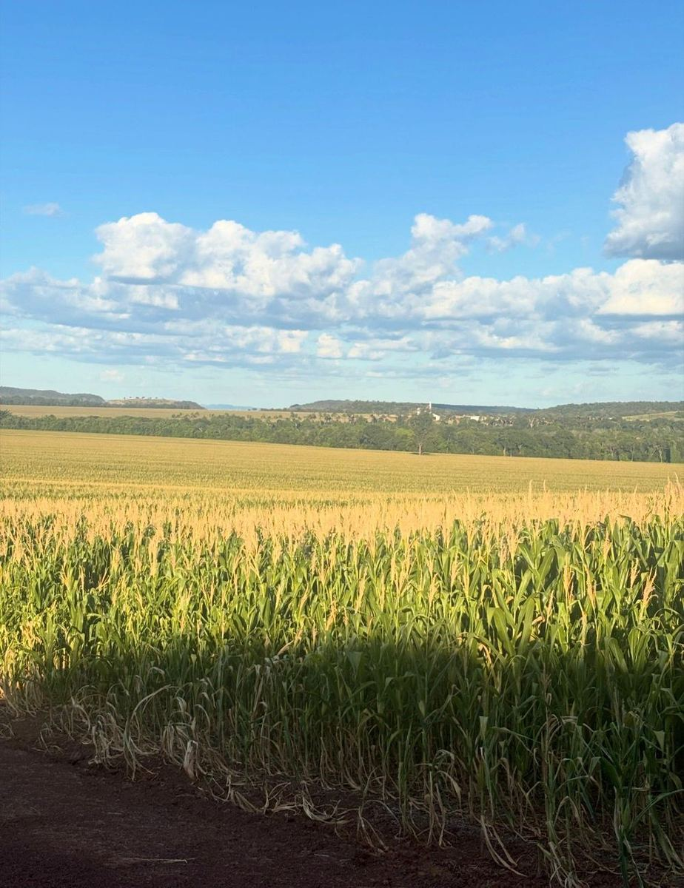
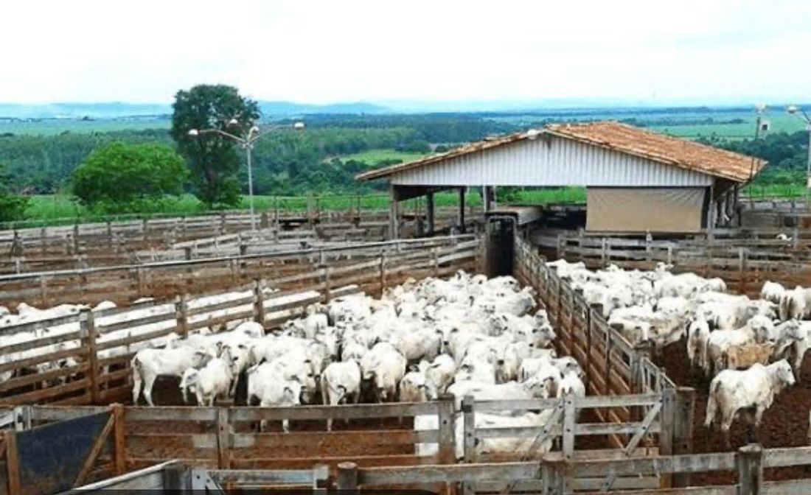

The portfolio
The farms
The broker, Prime Fazendas, currently holds a portfolio of 57 farms in the state of Tocantins, ranging from around 300 to 28,500 hectares — in different combinations of arable farming and livestock, and at different stages of development. Larger farms tend to be cheaper per hectare, as are those further from urban centres or with more land still to clear. If you have specific requirements, Prime Fazendas will search for a farm to match them.
- Brokerage is commission-free for the buyer, as is customary in Brazil.
- The land offered is fully consolidated.
- Farms usually include residential and farm buildings; larger ones may have their own airstrip. Machinery can be negotiated separately.
- Common reasons for sale: generational change on smaller farms (the founders' children prefer city life), and profit-taking or portfolio restructuring among larger agricultural companies.
- Local unit of area: 1 alqueire in Tocantins = 4.8 hectares.
Four examples in detail
Photographs are representative of farming in Tocantins; images of each specific property are available from the broker on request.

Fazenda Amazonita — 1,200 ha · Central Region
Suitable for agriculture and cattle. 500 ha pasture, 470 ha cropland. Residential house, lodging, storage, feed mill. Large stream and two natural water reservoirs. 60 km from Palmas.

Fazenda Turmalina do Cerrado — 28,500 ha · Southeast Region
Suitable for agriculture and cattle. 14,000 ha suitable for cropping, 3,000 ha for cattle. Residential house, manager's house, grain drying and storage, 1,000 m airstrip, four cattle stations. 40 km of riverbanks, 20 ponds and creeks. 70 km from town.

Fazenda Obsidiana Negra — 3,598 ha · Northeast Region
Suitable for agriculture. 1,700 ha in cultivation, a further 200–300 ha available. Residential house with four suites, three storages, filling station, scales. Artesian well. On main road TO-20, 20 km from Bunge and Cargill.

Fazenda Safira do Cerrado — 1,776 ha · Central Region
Suitable for cattle. 816 ha pasture. Modern residential houses, two modern cattle stations. Three natural wells, three water reservoirs, fish tanks. 69 km from Palmas.
The full portfolio
| Code | Name | City | Hectares | Value R$ | Value € | Land use |
|---|---|---|---|---|---|---|
| Full farm table goes here — to be populated from the updated Prime Fazendas list (Code · Name · City · Hectares · Value R$ · Value € · Land use). | ||||||